YTOL Smartphone APP
YTOL COMPANION
Access the WEB APP: In order to install the app on your mobile phone, first access on your phone's browser the app address: www.ytolcompanion.com.

Add to HOME SCREEN: Once on the app web page, access the options/properties (Android and iPhone examples shown on the left) and touch the option ADD TO HOME SCREEN.
Enjoy the APP: As a result of the step above, a new app icon will appear on the home screen of your phone. With it you can access the YTOL APP directly. On your first access, you just need to create an account with a password, confirm the sign up on your e-mail and enjoy!